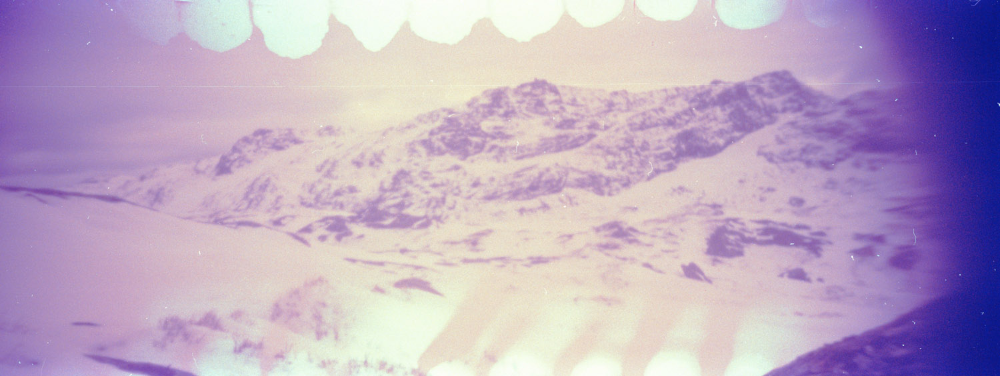
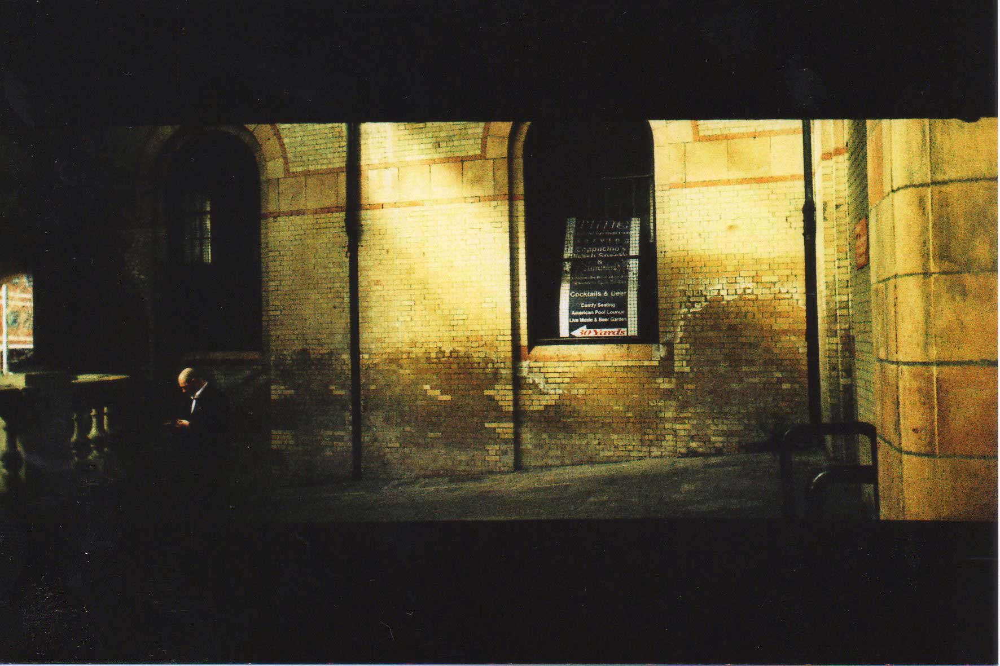

Most of my photographic endeavours have revolved around an arrogant avoidance of presumed correct manors, only to then circle back around again, tail between legs, ‘oh yeah.. probably should know at least the basics of this mechanic’. Luckily it is during these escapades you normally realise what it is you’re actually trying to achieve. Be that a slower more engaged connection between your subject and your use of technology, or a just a really nice picture.
Predominantly I would say I am a film photographer, the tactile approach to creating an image bearing the most inspiration for me. Over the years I have fashioned some ridiculous methods, a lot of the time involving pinhole cameras. This circling back to what I said about not wanting to learn fundamental photography techniques.. so I went with one of the most basic set ups possible. But it worked for me, and here we are.


- Education ·
- 2025 · PGDip Archives and Records Management - University of Dundee
- 2015 · MA Fine Art - Sheffield Hallam / KHiB
- 2015 · Summer School (being a nerd) - Istanbul Aydin University
- 2014 · MArt Fine Art - Sheffied Hallam
- 2009 · Foundation Art and Design - DeMontfort University
- Employment ·
- 2023 - · Archivist - Ljósmyndasafn Reykjavíkur
- 2021 - 2022 · Archivist - The Árni Magnússon Institute
- 2019 - 2025 · Photography Teacher - Myndlistaskólinn í Reykjavík
- 2016 · Photography Coordinator - SEEDS
- 2013 · Archival Intern - Ljósmyndasafn Reykjavíkur
- Exhibitions / Residencies / Awards / Workshops ·
- 2024 · Entertrainment and Peace – Workshop Host, Arnarhóll
- 2023 · Finnish Museum of Photography – Workshop Host, Helsinki
- 2020 · Röstin – Residency, Þórshöfn
- 2019 · Imprecise Pragmatic Portraiture – Solo Exhibition, Reykjavík
- 2017 · 10 Meters Underwater – Group Exhibition, Vilnius
- 2016 · Lunga Art Festival – Workshop, Seyðisfjörður
- 2015 · At the Still Point – Group Exhibition, Sheffield
- 2015 · Passenger – Group Exhibition, Bergen
- 2015 · Poster Show – Group Exhibition / Workshop, Bergen
- 2014 - · People of Print Graduate Award (nominated)
- 2014 - · Sheffield Institute of Arts Graduate Commission Award
- 2014 · Elapse – Group Exhibition, Sheffield
- 2014 · SIA Travel Bursary & The Sheffield Benefactors Award
- 2014 · Fabricate – Group Exhibition, Sheffield
- 2013 · Club Cube – Group Exhibition, Berlin
- 2013 · A Moment of Significance – Group Exhibition, Sheffield
- 2012 · Smashed – Group Exhibition, Berlin